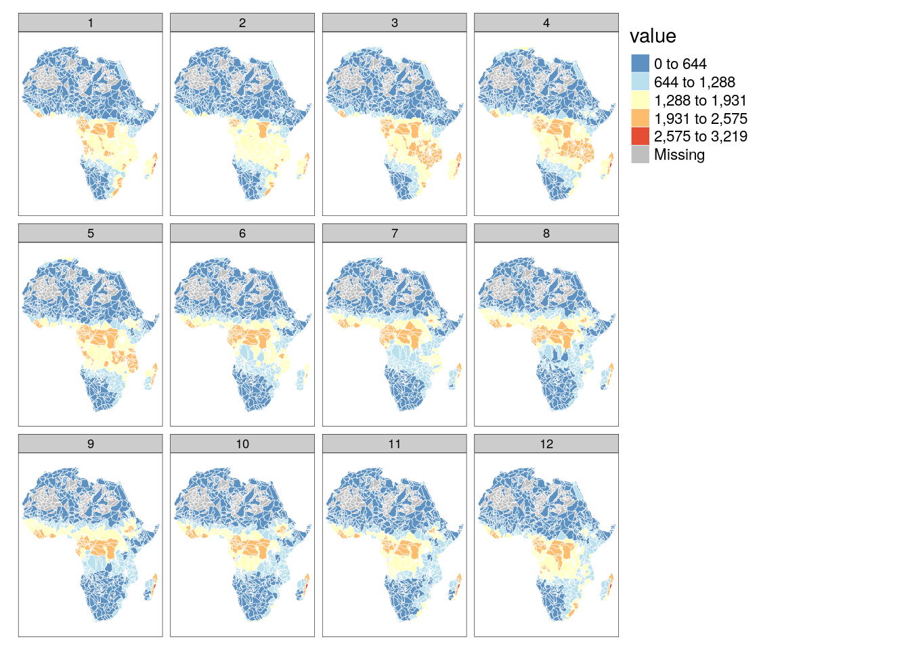

Gross Primary Productivity
Last updated: 2021-03-24
Checks: 5 1
Knit directory:
thesis/analysis/
This reproducible R Markdown analysis was created with workflowr (version 1.6.2). The Checks tab describes the reproducibility checks that were applied when the results were created. The Past versions tab lists the development history.
Great job! The global environment was empty. Objects defined in the global environment can affect the analysis in your R Markdown file in unknown ways. For reproduciblity it’s best to always run the code in an empty environment.
The command set.seed(20210321) was run prior to running the code in the R Markdown file.
Setting a seed ensures that any results that rely on randomness,
e.g. subsampling or permutations, are reproducible.
Great job! Recording the operating system, R version, and package versions is critical for reproducibility.
Nice! There were no cached chunks for this analysis, so you can be confident that you successfully produced the results during this run.
Great job! Using relative paths to the files within your workflowr project makes it easier to run your code on other machines.
Tracking code development and connecting the code version to the results is
critical for reproducibility. To start using Git, open the Terminal and type
git init in your project directory.
This project is not being versioned with Git. To obtain the full
reproducibility benefits of using workflowr, please see
?wflow_start.
1 Loading the data
files = list.files("../data/vector/extraction/", pattern = "_GPP", full.names = T)
data = lapply(files, function(x){
filename = str_split(basename(x), "_")[[1]]
if(length(filename) == 3){
unit = filename[1]
buffer = as.numeric(filename[2])
var = str_remove(filename[3], ".gpkg")
} else {
unit = filename[1]
buffer = 0
var = str_remove(filename[2], ".gpkg")
}
layers = ogrListLayers(x)
layers = layers[grep("attr_", layers)]
data = do.call(cbind, lapply(layers, function(l){
tmp = st_read(x, layer = l, quiet = TRUE)
names(tmp) = l
tmp
}))
data$id = 1:nrow(data)
data %>%
as_tibble() %>%
mutate(unit = unit, buffer = buffer, var = var) %>%
gather("time", "value", -id, -unit, -buffer, -var) %>%
mutate(time = str_remove(time, "attr_"))
})
data = do.call(rbind, data)
str(data)tibble [1,785,600 × 6] (S3: tbl_df/tbl/data.frame)
$ id : int [1:1785600] 1 2 3 4 5 6 7 8 9 10 ...
$ unit : chr [1:1785600] "basins" "basins" "basins" "basins" ...
$ buffer: num [1:1785600] 100 100 100 100 100 100 100 100 100 100 ...
$ var : chr [1:1785600] "GPP" "GPP" "GPP" "GPP" ...
$ time : chr [1:1785600] "2000-06" "2000-06" "2000-06" "2000-06" ...
$ value : num [1:1785600] 384.2 4.85 4.87 5.2 6.96 ...2 Missing Values
data %>%
group_by(unit, buffer) %>%
summarise(N = n(), isna = sum(is.na(value)), isnotna = sum(!is.na(value)), perc = sum(is.na(value)) / n() * 100)# A tibble: 8 x 6
# Groups: unit [2]
unit buffer N isna isnotna perc
<chr> <dbl> <int> <int> <int> <dbl>
1 basins 0 243120 39360 203760 16.2
2 basins 50 243120 22800 220320 9.38
3 basins 100 243120 15840 227280 6.52
4 basins 200 243120 6480 236640 2.67
5 states 0 203280 480 202800 0.236
6 states 50 203280 240 203040 0.118
7 states 100 203280 0 203280 0
8 states 200 203280 0 203280 0 3 Time Series
data %>%
filter(buffer==0) %>%
mutate(time = as.Date(paste0(time, "-01"))) %>%
group_by(time, unit) %>%
summarise(value = mean(value, na.rm = T)) %>%
ggplot() +
geom_line(aes(x=time, y=value, color = unit)) +
theme_classic() +
labs(y="Precipitation [mm]", x = "Time", color = "Unit of Analysis")4 Seasonal decompositon
data %>%
filter(unit == "basins", buffer == 0) %>%
mutate(time = as.Date(paste0(time, "-01"))) %>%
group_by(time) %>%
summarise(value = mean(value, na.rm = T)) %>%
pull(value) %>%
ts(start = c(2000,1), frequency = 12) %>%
decompose() -> dec_basins
data %>%
filter(unit == "states", buffer == 0) %>%
mutate(time = as.Date(paste0(time, "-01"))) %>%
group_by(time) %>%
summarise(value = mean(value, na.rm = T)) %>%
pull(value) %>%
ts(start = c(2000,1), frequency = 12) %>%
decompose() -> dec_states
dec_data = list(basins = dec_basins, states = dec_states)
dec_data = lapply(c("basins", "states"), function(x){
tmp = dec_data[[x]]
data.frame(type = x,
obsv = as.numeric(tmp$x),
seasonal = as.numeric(tmp$seasonal),
trend = as.numeric(tmp$trend),
random = as.numeric(tmp$random),
date = seq(as.Date("2000-01-01"), as.Date("2019-12-31"), by = "month"))
})
dec_data = do.call(rbind, dec_data)
dec_data %>%
as_tibble() %>%
gather(component, value, -type, -date) %>%
mutate(component = factor(component, levels = c("obsv", "trend", "seasonal", "random"))) %>%
ggplot() +
geom_line(aes(x=date, y=value, color=type)) +
facet_wrap(~component, nrow = 4, scales = "free_y") +
theme_classic() +
labs(y = "Precipitation [mm]", x = "Time", color = "Unit of Analysis") +
theme(legend.position="bottom")5 Auto-correlation Analysis
data %>%
filter( buffer == 0) %>%
mutate(time = as.Date(paste0(time, "-01"))) %>%
group_by(unit, time) %>%
summarise(value = mean(value, na.rm = T)) %>%
spread(key = unit, value = value) -> acf_data5.1 States
acf(acf_data$states, lag.max = 24, na.action = na.pass)5.2 Basins
acf(acf_data$basins, lag.max = 24, na.action = na.pass)6 Spatial Pattern
poly_bas = st_read("../data/vector/basins_mask.gpkg", quiet = T)
crs <- st_crs("EPSG:3857")
poly_bas <- st_transform(poly_bas, crs)
poly_bas <- st_simplify(poly_bas, dTolerance = 1000, preserveTopology = T)
poly_bas$id = 1:nrow(poly_bas)
poly_adm = st_read("../data/vector/states_mask.gpkg", quiet = T)
poly_adm <- st_transform(poly_adm, crs)
poly_adm <- st_simplify(poly_adm, dTolerance = 1500, preserveTopology = T)
poly_adm$id = 1:nrow(poly_adm)
data %>%
filter(buffer == 0) %>%
mutate(time = as.Date(paste0(time, "-01")),
month = month(time)) %>%
group_by(unit, id, month) %>%
summarise(obsv = sum(is.na(value))) -> obs_data
data %>%
filter(buffer == 0) %>%
mutate(time = as.Date(paste0(time, "-01")),
month = month(time)) %>%
group_by(unit, id, month) %>%
summarise(value = mean(value, na.rm = T)) -> sum_data
poly_adm = left_join(poly_adm, filter(sum_data, unit == "states"))
poly_bas = left_join(poly_bas, filter(sum_data, unit == "basins"))
poly_adm = left_join(poly_adm, filter(obs_data, unit == "states"))
poly_bas = left_join(poly_bas, filter(obs_data, unit == "basins"))6.1 Administrative Units by month
6.1.1 Number of missing observations
tm_shape(poly_adm) +
tm_polygons("obsv", palette = "-RdBu", border.col = "white", lwd = .5) +
tm_facets("month") ### Precipitation map
### Precipitation map
tm_shape(poly_adm) +
tm_polygons(col = "value", palette = "-RdYlBu", style = "equal", border.col = "white", lwd = .5) +
tm_facets("month")6.2 Sub-basin watersheds by month
6.2.1 Number of missing observations
tm_shape(poly_bas) +
tm_polygons("obsv", palette = "-RdBu", border.col = "white", lwd = .5) +
tm_facets("month")6.2.2 Precipitation map
tm_shape(poly_bas) +
tm_polygons(col = "value", palette = "-RdYlBu", style = "equal", border.col = "white", lwd = .5) +
tm_facets("month")
sessionInfo()R version 3.6.3 (2020-02-29)
Platform: x86_64-pc-linux-gnu (64-bit)
Running under: Debian GNU/Linux 10 (buster)
Matrix products: default
BLAS/LAPACK: /usr/lib/x86_64-linux-gnu/libopenblasp-r0.3.5.so
locale:
[1] LC_CTYPE=en_US.UTF-8 LC_NUMERIC=C
[3] LC_TIME=en_US.UTF-8 LC_COLLATE=en_US.UTF-8
[5] LC_MONETARY=en_US.UTF-8 LC_MESSAGES=C
[7] LC_PAPER=en_US.UTF-8 LC_NAME=C
[9] LC_ADDRESS=C LC_TELEPHONE=C
[11] LC_MEASUREMENT=en_US.UTF-8 LC_IDENTIFICATION=C
attached base packages:
[1] stats graphics grDevices utils datasets methods base
other attached packages:
[1] lubridate_1.7.9.2 rgdal_1.5-18 countrycode_1.2.0 welchADF_0.3.2
[5] rstatix_0.6.0 ggpubr_0.4.0 scales_1.1.1 RColorBrewer_1.1-2
[9] latex2exp_0.4.0 cubelyr_1.0.0 gridExtra_2.3 ggtext_0.1.1
[13] magrittr_2.0.1 tmap_3.2 sf_0.9-7 raster_3.4-5
[17] sp_1.4-4 forcats_0.5.0 stringr_1.4.0 purrr_0.3.4
[21] readr_1.4.0 tidyr_1.1.2 tibble_3.0.6 tidyverse_1.3.0
[25] huwiwidown_0.0.1 kableExtra_1.3.1 knitr_1.31 rmarkdown_2.7.3
[29] bookdown_0.21 ggplot2_3.3.3 dplyr_1.0.2 devtools_2.3.2
[33] usethis_2.0.0
loaded via a namespace (and not attached):
[1] readxl_1.3.1 backports_1.2.0 workflowr_1.6.2
[4] lwgeom_0.2-5 splines_3.6.3 crosstalk_1.1.0.1
[7] leaflet_2.0.3 digest_0.6.27 htmltools_0.5.1.1
[10] fansi_0.4.2 memoise_1.1.0 openxlsx_4.2.3
[13] remotes_2.2.0 modelr_0.1.8 prettyunits_1.1.1
[16] colorspace_2.0-0 rvest_0.3.6 haven_2.3.1
[19] xfun_0.21 leafem_0.1.3 callr_3.5.1
[22] crayon_1.4.0 jsonlite_1.7.2 lme4_1.1-26
[25] glue_1.4.2 stars_0.4-3 gtable_0.3.0
[28] webshot_0.5.2 car_3.0-10 pkgbuild_1.2.0
[31] abind_1.4-5 DBI_1.1.0 Rcpp_1.0.5
[34] viridisLite_0.3.0 gridtext_0.1.4 units_0.6-7
[37] foreign_0.8-71 htmlwidgets_1.5.3 httr_1.4.2
[40] ellipsis_0.3.1 farver_2.0.3 pkgconfig_2.0.3
[43] XML_3.99-0.3 dbplyr_2.0.0 utf8_1.1.4
[46] labeling_0.4.2 tidyselect_1.1.0 rlang_0.4.10
[49] later_1.1.0.1 tmaptools_3.1 munsell_0.5.0
[52] cellranger_1.1.0 tools_3.6.3 cli_2.3.0
[55] generics_0.1.0 broom_0.7.2 evaluate_0.14
[58] yaml_2.2.1 processx_3.4.5 leafsync_0.1.0
[61] fs_1.5.0 zip_2.1.1 nlme_3.1-150
[64] xml2_1.3.2 compiler_3.6.3 rstudioapi_0.13
[67] curl_4.3 png_0.1-7 e1071_1.7-4
[70] testthat_3.0.1 ggsignif_0.6.0 reprex_0.3.0
[73] statmod_1.4.35 stringi_1.5.3 highr_0.8
[76] ps_1.5.0 desc_1.2.0 lattice_0.20-41
[79] Matrix_1.2-18 nloptr_1.2.2.2 classInt_0.4-3
[82] vctrs_0.3.6 pillar_1.4.7 lifecycle_0.2.0
[85] data.table_1.13.2 httpuv_1.5.5 R6_2.5.0
[88] promises_1.1.1 KernSmooth_2.23-18 rio_0.5.16
[91] sessioninfo_1.1.1 codetools_0.2-16 dichromat_2.0-0
[94] boot_1.3-25 MASS_7.3-53 assertthat_0.2.1
[97] pkgload_1.1.0 rprojroot_2.0.2 withr_2.4.1
[100] parallel_3.6.3 hms_1.0.0 grid_3.6.3
[103] minqa_1.2.4 class_7.3-17 carData_3.0-4
[106] git2r_0.27.1 base64enc_0.1-3